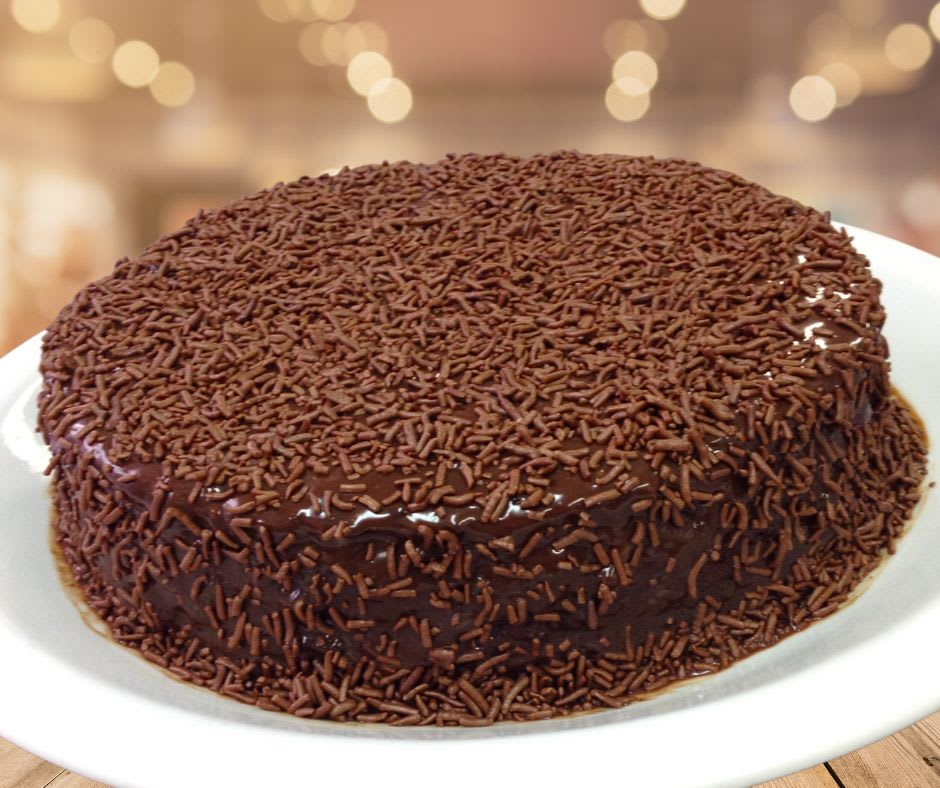
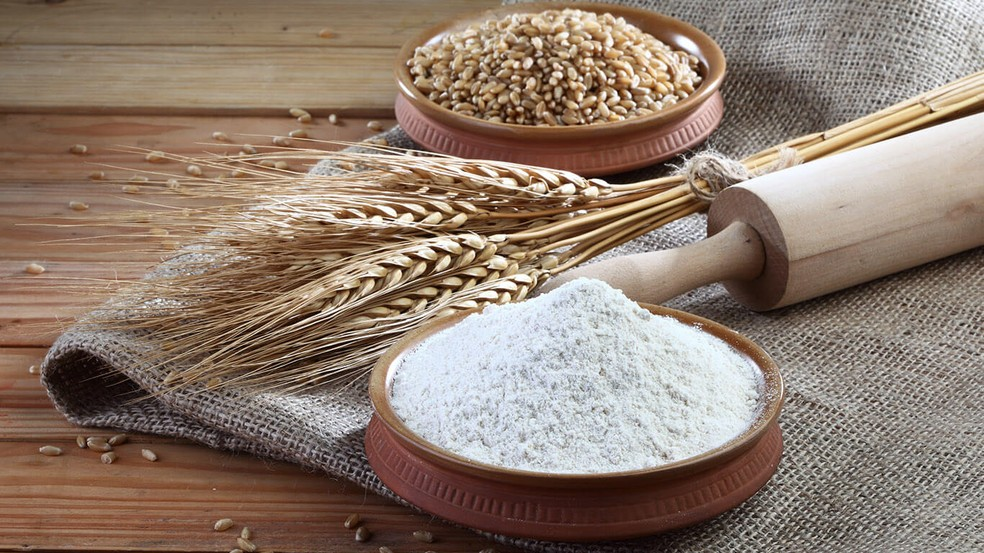

Bolo de Chocolate Palmirinha

Ingredientes
- 1 xícara (chá) de leite
- 1 xícara (chá) de açúcar
- 2 xícaras (chá) de farinha de trigo
- 1 colher (sobremesa) de fermento em pó
- 1 colher (sobremesa) de óleo
- 1 xícara (chá) de chocolate em pó
Modo de Preparo
- Em uma tigela, coloque o leite, o açúcar, a farinha e o óleo.
- Coloque o chocolate em pó e misture a massa.
- Misture e deixe descansar por 20 minutos.
- Despeje a massa em uma forma untada e leve ao forno médio (180°C) preaquecido por 40 minutos.
- Desligue o forno e deixe descansar por 10 minutos.
- Despeje a massa em uma forma untada e leve ao forno médio (180°C) preaquecido por 25 minutos.
- Desligue o forno e deixe descansar por 10 minutos.
Imagens
